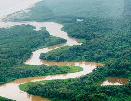

Pagina principal
Animales en Honduras
Parque Nacional la tigra
Biosfera del Rio Platano
Biosfera Del Rio Platano
La Reserva de la Biosfera de Río Plátano
Está localizada sobre el río Plátano en La Mosquitia la región en la costa caribeña de Honduras. Esta reserva ha sido declaradaPatrimonio de la Humanidad y Reserva de la Biosfera por la Unesco, en el año 1982. La reserva abarca tanto las montañas como las tierras bajas de selva tropical, llena de flora y fauna diversa, en la que al menos 2000 indígenas siguen viviendo de su modo tradicional.
En el año 1996 la reserva pasó a la categoría de en peligro, que le fue retirada en el año2007. Sin embargo sus valores ambientales y culturales son amenazados por, una pobre gestión ambiental, la colonización para roturar nuevos terrenos agrícolas y las talas ilegales. Existen, así mismo, un proyecto de central hidroeléctrica.Reseña histórica
La "Reserva de la Humanidad y Biosfera del Río Plátano" fue declarada en 1980 por el gobierno hondureño. En 1980 la UNESCO declaró el Río Plátano como una reserva mundial. Fue declarada "área protegida" por la exigencia de grupos ambientalistas o por organismos internacionales que han vislumbrado que la vida en el planeta tiene limitantes temporales que se acortan gracias a la acción depredadora de la humanidad supuestamente civilizada.
Esta región ha sido ocupada por humanos desde hace muchos años. Cerca de 80 arqueólogos se han localizado en la biosfera. Esto debido los misterioso petroglifos dibujados en grandes piedras, las cuales son encontradas a lo largo de muchas de las riveras de los ríos. El pueblo de Las Cricutas del Rio Aner que se encuentra establecida en la zona sureste de la reserva se cree es una de las más grandes e impresionantes sitios arqueológicos de la biosfera. Existe muy poco conocimiento acerca de este sitio arqueológico y se desconoce las cultura que lo creo. Las leyendas locales hablan de la existencia de una gran ciudad ancestral en el área, llamada "Ciudad Blanca", esta ciudad puede todavía estar esperando ser descubierta en la reserva. Muchos arqueólogos creen que esta desconocida cultura jugo un importante papel entre las antiguas culturas de Norte y Sur América.
Ubicación
La reserva se encuentra situada en la parte noreste de Honduras en su mayoría entre los departamentos de Colón y Gracias a Dios, y cubre un área de 5251 km2 o 390,000 hectáreas. La biosfera es la zona más grande de bosque encontrada en Honduras. Estas zonas son bañadas por numerosos ríos de los cuales la mayoría fluyen del mar Caribe, como por ejemplo el Río Guarasca que luego se convierte en el Río Plátano, también el Río Cuyamel y el Río Chilmeca. Algunas de las poblaciones que se encuentran en los alrededores son Palacios, Las Marias, Playitas y Curí.
Población
Cuatro grupos indígenas habitan el Río Plátano; Garifunas, Misquitos, Pech y Sumo (tawakas). Los garifunas son una mezcla de africanos con indigenas del caribe, los miskitos son una mezcla de garifuna con indigenas misquitos (pech y tawakas) mientras que los pech (300 habitantes) y tawakas (800 habitantes) mantienen sus comunidades con su tradicional estilo de vida en las remotas regiones de la biosfera, en un total se pueden mencionar un total de 8000 habitantes sin tomar en cuenta los que viven adentro en la montaña. El grupo étnico más numeroso es el de los miskitos.
Los habitantes de la zona cultivan maíz, frijoles, yuca, etc. para sobrevivir, además viven de la caza, pesca y del consumo de plantas silvestres utilizando estas últimas principalmente para medicina.
Ecosistemas: flora, fauna y factores abióticos
El 25% de la biosfera es un zona costera cubierta por grandes áreas de mangle, las dos áreas más grande se encuentran a los largo de la costa de Brus Laguna (120 km²) y la Laguna de Ibans ( 63 km²), un gran número de sabanas y humedales se encuentran a todo lo largo del resto de la región. Cerca del 75% de la biosfera son montañas con muchos rangos de altura. Pico Morrañanga alcanza los 1500 metros y Punta de Piedra 1326 metros. Increibles formaciones geologicas son encontradas en las regiones de tierra firma, tales como El Viejo or Pico de Dama. Cascadas y choros son econtrados regularmente, la más alta (100-150 m) es la Cascada del Mirador en la cabecera del Río Cuyamel. Esta inmensa área consiste principalmente en bosque lluvioso tropical.
Los bosques tropicales son bosques de hojas anchas en las áreas tropicales y subtropicales del mundo. Bosques lluviosos tropicales se encuentran en alto riesgo en todo el mundo, debido a la descontrolada deforestación y el desarrollo. Los bosques lluviosos tropicales contienen la más altabiodiversidad de todos los hábitat de la tierra, convirtiéndose en el hogar de millones de diferentes y muchas aun desconocidas especies. Sus bancosgenéticos son una de las más importantes reservas naturales de la tierra, ganando más valor cada día debido a los avances de la biotecnología. Los científicos han encontrado en una hectárea de bosque lluvioso algunas 200 especies diferentes de árboles y arbustos.
Uno de los secretos de la biodiversidad de los bosques lluviosos tropicales es la apariencia de una organización vertical de sus especies. Más de 5 niveles de plantas, incluyendo bosques cubierto, son encontrados. Cada nivel es formado por especies especificas, y habitado por diferentes animales.
En las regiones más altas de pino y las más bajas de bosque nublado pueden encontrarse, también en algunos puntos altos de las regiones pequeñas áreas de bosques enanos. La vegetación de los bosques enanos se ha adaptado a las condiciones del suelo, poca profundidad del mismo, y los fuertes vientos, no permite que las especies prosperen de la misma manera como lo hacen en las zonas mas bajas, dando origen a la presencia escasa de árboles adultos que a pesar de tener (en su mayoría) mas de 100 años, como normalmente se encontrarían en otras zonas de la reserva de hasta 40 metros de altos, aquí sólo alcanzan bajas alturas de hasta 3-4 metros. Los árboles están cubiertos por una gran cantidad de musgos vliquenes.
En un inmenso árbol de un bosque lluvioso los biólogos contaron 54 especies de hormigas, más de las que existen en toda Inglaterra.
Algunos de las especies de árboles que se encuentran en la reserva incluyen: balsa, ceiba, guayacan, caoba, santa maria, cedro y pino. Se ha comprobado que la biosfera contiene más de tres especies por hectárea cuadrada que la selva del Amazonas. Un hecho bastante impresionante. Los variados ecosistemas en la biosfera proveen hábitat para muchas especies raras y en peligro. Las costas y ríos son los hogares de los manatí, nutria, tortugas verdes de mar y caimán. Las áreas de bosque son el hogar de tapir, jaguar, ocelote, león, jaguarundi, kekeo, jaguilla, mono arana, mono aullador, mono cara blanca, venado cola blanca, oso caballo y oso perezoso de tres dedos solo para nombrar algunos. La biosfera contiene la mayor población de especies en peligro de extinción de toda Honduras. La protección de la reserva es de gran importancia para que cada una de estas especies pueda sobrevivir.
Mas de 375 especies de aves se encuentran en la biosfera. La biosfera también es visitada por muchas especies de aves migratorias. Muchas de las especies raras de aves que se encuentran en estas regiones, no pueden ser vistas en otras partes del país. Especies como águila arpía, halcón fajado, guacamaya verde y rojo, pescador menor y jabirú. Esta es otra de las razones por las cuales la biosfera es de gran importancia para que cada una de estas especies sobreviva.
Todos los organismos que se encuentran en la biosfera son heterótrofos tanto los que habitan en los diversos ecosistemas presentes como los de los acuáticos. Los árboles, arbustos y todo tipo de plantas que hay en los ecosistemas son autótrofos, osea que producen su propio alimento.
Papel del gobierno
La mayoría de veces el gobierno a actuado más en contra que a favor de la protección de la Biosfera ya que a través de los años su intervención ha provocado que esta reserva natural en vez de preservarse se destruya ya que, en la década de los 90 la degradación de la Biosfera del Río Plátano empezó hacerse más visible cuando altos funcionarios gubernamentales, diputados y se rumora que el ex presidente Rafael Leonardo Callejas empezaron a titular ilegalmente grandes extensiones aprovechándose del poder; éste fue el principio de la destrucción que se vislumbra de unpatrimonio mundial, y que nos hace quedar como un pueblo que sigue por el camino equivocado que ayer siguieron los europeos que "nos civilizaron" con saña y fuego.
El expresidente de la república Carlos Roberto Reina, con su demagogia acostumbrada, declaró los valles de Sico y Paulaya, que forman parte de la zona de amortiguamiento de la biosfera, en área para la reforma agraria, sin saber que tal disposición volvería más vulnerable a esta reserva, cuyo núcleo es, sin lugar a dudas, uno de los pocos espacios con biodiversidad inmaculada y el segundo pulmón del planeta.
Las emigraciones hacia la reserva principalmente de indígenas de la zona de Choluteca que estaban pasando por la crisis de lsequía y falta de fertilidad de los terrenos, muchas veces inducidas y facilitadas con disimulo estudiado, por otro demagogo que dirigió el INA en el gobierno de Carlos Roberto Flores son incontrolables y la tala ya toca las fronteras vitales de la biosfera Río Plátano de donde se saca maderas preciosas utilizando barcazas y camions, muchas veces en nombre de ciertas organizaciones ambientalistas donde se esconden criminales ambientales sin escrúpulos, y vergonzosamente amparados legalmente por el alcalde de Iriona y de otras autoridades.
Defender la biosfera es responsabilidad de todos, sin embargo, es al Ministerio de Recursos Naturales y del Ambiente a quien le corresponde definir laspolíticas encaminadas a proteger y preservar los recursos naturales.
Es la historia de siempre y parece que para siempre: Los responsables de administrar los recursos naturales, alegan de que nadie ha denunciado tal situación y que por eso no actúan. Por tal razón, los depredadores del bosque no se preocupan y siguen haciendo de las suyas en la biosfera de Río Plátano y otras áreas de reserva que sufren una degradación acelerada a consecuencia de la acción criminal e irracional de quienes prefieren hacer en el presente un pingüe negocio, que dejarle una herencia natural equilibrada a las futuras generaciones.
Qué está haciendo el gobierno actualmente
Actualmente el gobierno esta desarrollando un proyecto denominado Biosfera del Río Plátano a través de AFE-COHDEFOR, con el que se pretende preservar y proteger la biosfera, además el ministerio de turismo promueve las expediciones para la biósfera, obteniendo con esto ingresos al país.
Hay algunas organizaciones turísticas que promueven las expediciones con planes ya elaborado para el paseo brindando alimentación, alojamiento y guías, éstas lo hacen con fines económicos y se ubican en los lugares cercanos a la biosfera.
Las organizaciones étnicas se están preocupando más por la titulación de tierras y ejercen medidas de presión contra el gobierno para que agilice los trámites.
Organizaciones que trabajan en pro de la preservación y protección de la Biosfera
• AFE-COHDEFOR
• Asociación Hondureña de Ecología.
• MOPAUR
Situación problemática que enfrenta la biosfera
La biosfera del Río Plátano es el segundo pulmón del planeta, pero la desconsideración de algunos y la ignorancia de otros está logrando destruirla, entre los principales problemas que enfrenta esta área protegida están:
• La migración de campesinos provenientes de Choluteca, que después de haber hecho que las tierras en este departamento perdiera su capa fértil por las malas prácticas de cultivo, se están viendo obligados a emigrar para poder sobrevivir.
• La tala de bosque para construir potreros y criar ganado Bramahan o para cultivar.
• La pesca en el río con dinámita.
• La demasiada población, que ya está asentándose por completo, porque el gobierno hasta les está construyendo centros educativos, aceptando con esto que habiten ahí por no tratar de ubicarlos en otro lugar.
• La tala de árboles de madera preciosa, como el caoba, para comercializar con la madera.
• La indifencia del gobierno a todos estos problemas.
• La poca acción y presión de las organizaciones ambientalistas para tratar de solucionar estos problemas.
• La ignorancia de los inmigrantes que llegan a la zona, así como el poco conocimiento de la misma, provocando con esto malas prácticas de cultivo y alteración entre la relación natural que existe entre los grupos nativos y la biosfera.
• La comercialización con aves como guaras, loros y otras especies apetecibles por los extranjeros.
• Existe tráfico de drogas en la zona y la misma se ha convertido en refugio de maleantes.
• Falta de un estudio territorial de la zona, no existe titulación de tierras, ni una organización que controle la migración a la misma.
